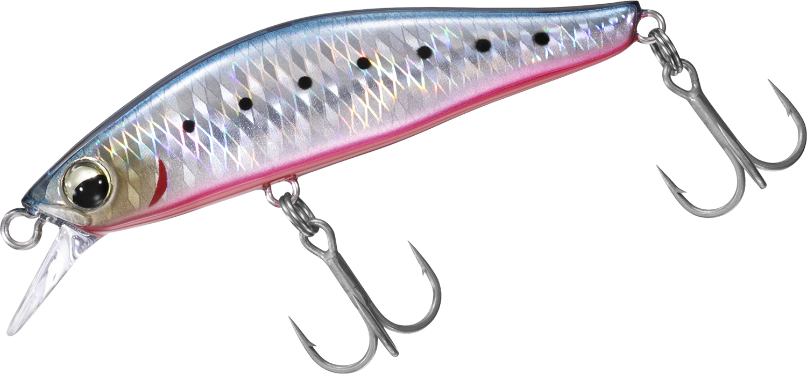
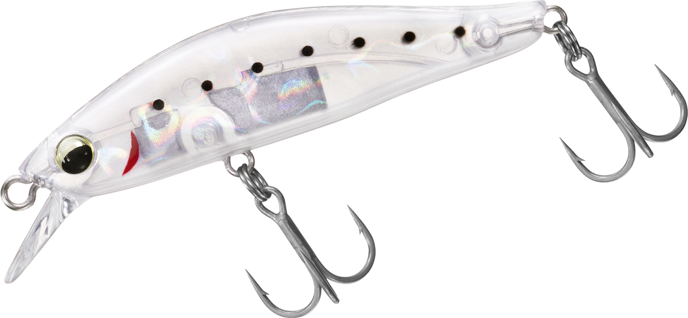
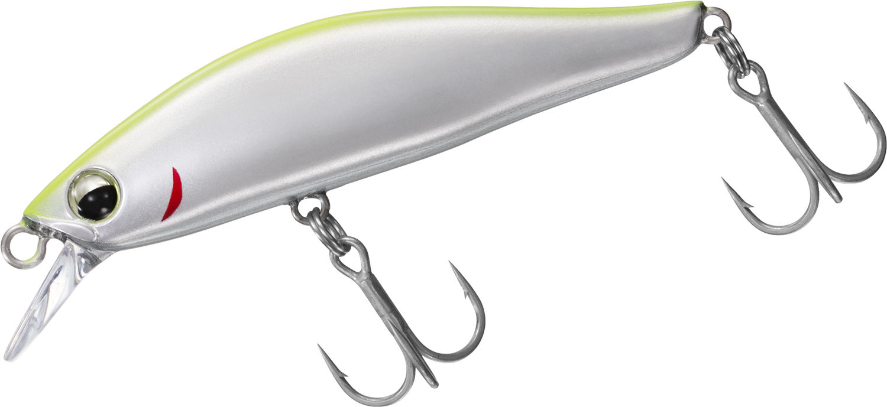
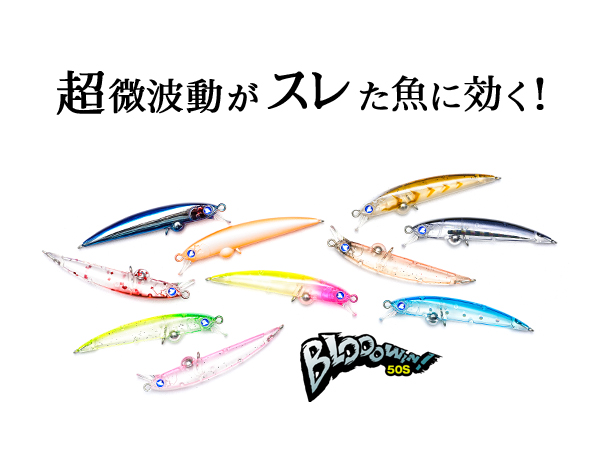

カマスハンター
（シンキングミノー）
カマスハンターはDAIWA（ダイワ）のシンキングミノーです。
その名の通りカマス・メッキ専用に設計された55Sモデル。高レスポンス設計と固定ウェイトシステムにより、トゥイッチやジャークにキレよく反応するヒラ打ちアクションが最大の魅力です。

画像出典:DAIWA公式HP
スペック
- メーカー
- DAIWA（ダイワ）
- タイプ
- シンキングミノー
- 全長
- 55mm
- 自重
- 5.5g
- フック
- シルバートレブル#10
- ターゲット
- カマス・メッキ
- 価格
- 1,200円（税抜）
- 発売
- 2026年9月
▼今すぐチェック
カマスハンターの特徴
カマス・メッキに照準を絞った、キレのあるヒラ打ちアクションが武器の1本
-
高レスポンス設計でキレのあるヒラ打ちアクション
アングラーのトゥイッチ・ジャークの入力を忠実に再現する高レスポンス設計。軽快でキレのあるヒラ打ちアクションが、カマス・メッキの反射的なバイトを誘う。
-
固定ウェイトシステムで素早い立ち上がりと連続アクション
固定ウェイトシステムにより、ロッドアクションへの反応が早く、連続したアクションを継続しやすい。テンポよく誘いを入れたいカマス・メッキゲームに向いた設計。
-
高速リトリーブでも浮き上がりにくく正確なレンジ狙撃
速いリトリーブでも浮き上がりにくいため、群れが入っているレンジを外さずに正確に通せる。ナイトゲームでのレンジキープにも強い。
カマスハンターの使い方
基本はただ巻きでも反応するが、真価を発揮するのはトゥイッチ・ジャークを織り交ぜたテンポの良い誘い。高レスポンス設計を活かして小刻みにロッドを操作し、ヒラ打ちアクションで反射的なバイトを引き出す。
高速リトリーブでも浮き上がりにくいため、表層〜中層でレンジをキープしたまま探るのが基本の組み立て。群れの回遊レンジが分かっている状況では、同じレンジを丁寧にトレースするとヒット率が上がる。
カマスハンターの得意な状況
堤防や河口・港内にカマスやメッキの群れが回遊するタイミングが最大の出番。
常夜灯周りのナイトゲームや、秋のメッキの接岸シーズンなど、小型ベイトを意識してテンポよく口を使わせたい場面に強い。表層〜中層のレンジをキープしながらテンポよく探りたい状況で選びたい1本です。
ワンポイント
反応が渋い時は、トゥイッチの間隔を一定にせず「速い連続トゥイッチ→ポーズ」のように緩急をつけると、見切られにくくなります。
常夜灯周りでは、明暗の境目をゆっくり通すだけでも反応が出やすいので、まずはただ巻きから試すのがおすすめです。
オススメカラー
カマスハンターは全8色展開。カマス・メッキゲームでオススメのカラーを厳選して紹介します。
 オレンジバックゴールド
オレンジバックゴールド
ゴールド系の強い反射で、澄み潮やマズメ時のアピール力を重視したい時に。

DHイワシレッドベリーイワシ系ベイトパターンにマッチするナチュラル系カラー。

ケイムラクリアイワシGBケイムラ発光でナイトゲームや薄暗い時間帯の視認性を高めたい時に。

チャートバックシルバー濁り潮やローライト時でも見つけてもらいやすい高アピールカラー。
画像出典:DAIWA公式HP
カマスハンターに似ているルアー
-

ブローウィン50S BlueBlue 詳細はこちら＞全長50mm・自重2gのスローシンキングミノー。ライトゲーム向けの小型サイズという点でカマスハンターと近く、繊細なアプローチが必要な場面で持ち替えたい1本。
-
 ミニゾー45
BlueBlue
詳細はこちら＞
ミニゾー45
BlueBlue
詳細はこちら＞
全長45mmのトップウォーターペンシル。タイプは異なるが、同じく小型ベイトパターンのライトゲームを想定したサイズ感がカマスハンターと重なる。